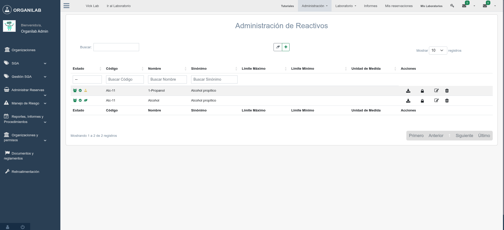
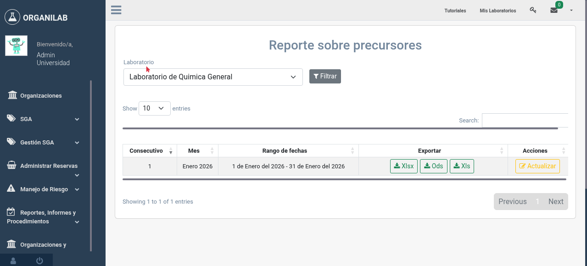

5. Precursores Químicos
Los precursores químicos son sustancias controladas por la legislación costarricense que requieren un seguimiento especial debido a su potencial uso en la fabricación ilícita de drogas. Organilab incluye herramientas específicas para gestionar estas sustancias y generar los reportes mensuales requeridos por la autoridad.
Decreto 44741-S-MAG
El Decreto Ejecutivo 44741-S-MAG es la normativa costarricense que regula el control de sustancias químicas que pueden utilizarse como precursores en la fabricación de drogas. Establece:
- La lista de sustancias controladas como precursores químicos.
- La clasificación de precursores en tres tipos (I, II y III) según su nivel de control.
- La obligación de llevar registros detallados de compras, usos y existencias.
- La presentación de reportes periódicos a las autoridades competentes.
- Los umbrales de cantidad a partir de los cuales se requiere control especial.
Tipos de Precursores
Organilab clasifica los precursores en tres tipos, siguiendo la clasificación del decreto. El tipo de precursor se registra en el campo precursor_type de las características de sustancia:
| Tipo | Nivel de control | Descripción | Ejemplos |
|---|---|---|---|
| Tipo I | Máximo | Sustancias con mayor potencial de desvío para la fabricación ilícita. Requieren control estricto y reporte detallado de cada movimiento. | Efedrina, pseudoefedrina, ácido lisérgico |
| Tipo II | Intermedio | Sustancias que requieren control significativo. Se reportan cuando superan ciertos umbrales de cantidad. | Ácido fenilacético, piperonal, safrol |
| Tipo III | Básico | Sustancias de amplio uso industrial y de laboratorio que requieren monitoreo general y reporte de volúmenes significativos. | Acetona, ácido clorhídrico, ácido sulfúrico, tolueno |
Configuración de Precursores en Organilab
Para que una sustancia sea tratada como precursor químico en Organilab, se deben configurar los siguientes campos en las Características de Sustancia y en el Objeto:
En las Características de Sustancia
| Campo | Descripción | Valores |
|---|---|---|
| Es precursor (is_precursor) | Indica que la sustancia es un precursor químico controlado | Si / No |
| Tipo de precursor (precursor_type) | Clasificación del precursor según el decreto | Tipo I / Tipo II / Tipo III |
En el Objeto
| Campo | Descripción | Uso |
|---|---|---|
| Tiene umbral (has_threshold) | Indica si el objeto tiene un límite de cantidad controlado | Activa el control de umbral para alertas automáticas |
| Umbral (threshold) | Cantidad máxima permitida antes de requerir notificación | Se compara con la cantidad actual en inventario |
| Es puro (is_pure) | Si la sustancia es pura o una mezcla/solución | Afecta el cálculo de cantidades reportadas |
| Densidad | Densidad de la sustancia | Permite conversión entre unidades volumétricas y de masa |

Configuración de un reactivo como precursor
Reportes Mensuales de Precursores
Organilab genera automáticamente reportes mensuales de precursores químicos a través del modelo PrecursorReport. Estos reportes recopilan todos los movimientos de precursores durante el mes y calculan los balances correspondientes.
Estructura del Reporte
Cada reporte mensual contiene valores detallados por sustancia a través del modelo PrecursorReportValues, que incluye:
| Campo | Descripción | Cálculo |
|---|---|---|
| Saldo anterior (previous_balance) | Cantidad disponible al inicio del mes | Saldo final del mes anterior |
| Nuevos ingresos (new_income) | Cantidad adquirida o recibida durante el mes | Suma de todas las entradas del mes |
| Gasto del mes (month_expense) | Cantidad utilizada o consumida durante el mes | Suma de todos los consumos del mes |
| Saldo final (final_balance) | Cantidad disponible al cierre del mes | Saldo anterior + ingresos - gastos |
Generación y Envío de Reportes
- Los reportes se generan automáticamente al cierre de cada mes mediante tareas programadas de Celery.
- El sistema recopila todos los movimientos de precursores registrados en el laboratorio.
- Se calculan los balances de cada sustancia precursora (saldo anterior, ingresos, gastos, saldo final).
- El reporte queda disponible para revisión en el módulo de reportes.
- El administrador puede revisar, ajustar si es necesario, y aprobar el reporte.
- Una vez aprobado, el reporte puede exportarse para su presentación ante las autoridades.

Vista del reporte mensual de precursores
Buenas Prácticas para el Control de Precursores
- Registro inmediato: Registre cada movimiento de precursores en el momento en que ocurre, no al final del día o de la semana.
- Verificación de umbrales: Revise periódicamente que las cantidades en inventario no excedan los umbrales configurados.
- Revisión de reportes: Antes de aprobar un reporte mensual, verifique que los balances sean coherentes con el inventario físico.
- Almacenamiento seguro: Los precursores deben almacenarse bajo llave con acceso restringido y registro de quién accede.
- Capacitación del personal: Asegúrese de que todo el personal que maneja precursores conozca los procedimientos de registro y control.